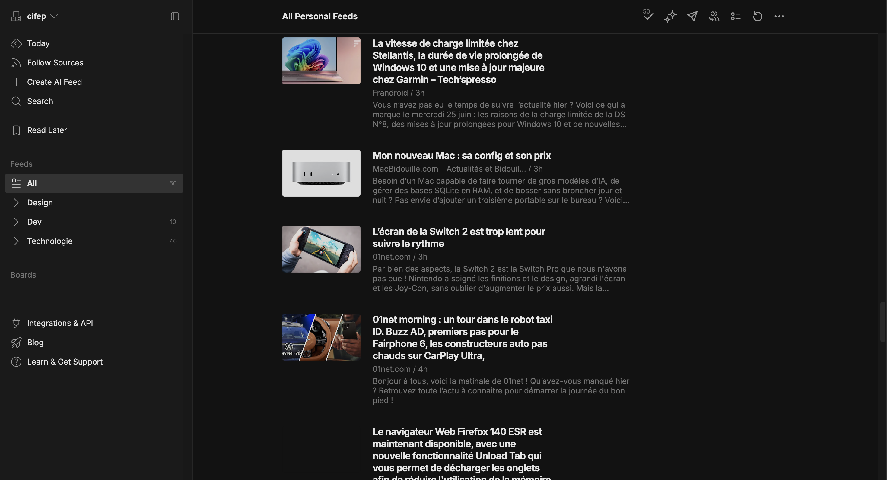
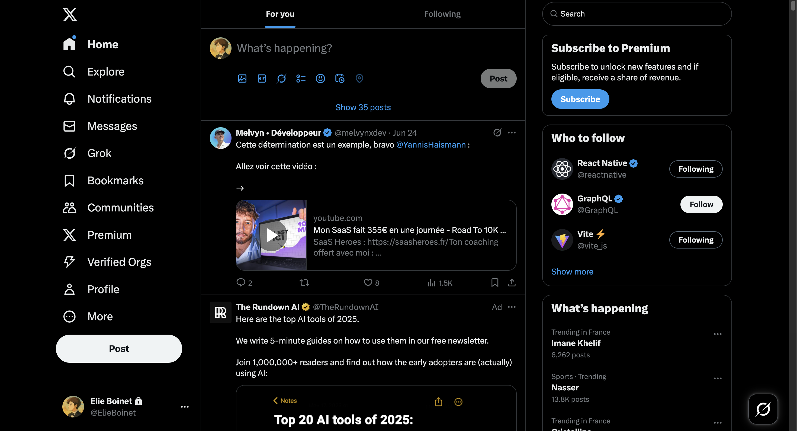
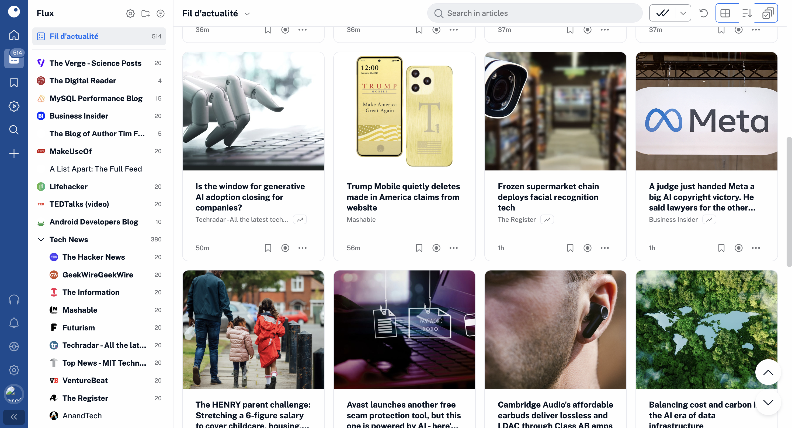

Ma Veille
Qu'est ce que la veille ?
La veille est un processus qui consiste à surveiller les tendances, les innovations et les changements dans un domaine spécifique. Cela peut être fait pour différentes raisons, comme pour rester à jour sur les dernières technologies, les nouvelles méthodologies ou les dernières tendances dans un domaine de travail.
Mes outils de Veille :
Pour rester à jour, j'utilise principalement X (Twitter) pour capter les dernières actualités et échanges en temps réel, ainsi que des plateformes comme Feedly et AI-driven tools pour agréger et analyser des contenus pertinents. Cette approche me permet de rester informé et d'enrichir mes projets avec des idées innovantes.

Feedly
Plateforme d'agrégation de contenus

X (Twitter)
Plateforme de communication et de partage

Inoreader
Plateforme d'agrégation de contenus
Sujets de ma Veille :
Ma veille technologique s'articule autour de plusieurs thématiques clés :
Hardware : Je m'intéresse aux évolutions des composants matériels, des architectures de processeurs aux solutions de stockage et aux technologies émergentes comme les ordinateurs quantiques. Comprendre les fondations matérielles est essentiel pour optimiser les performances des systèmes.
Cybersécurité : Dans un monde de plus en plus connecté, la sécurité informatique est une priorité. Je suis les dernières tendances en matière de protection des données, de cryptographie, de détection des vulnérabilités et de gestion des menaces, afin de garantir des solutions robustes et fiables.
Langages de programmation : Je me tiens à jour sur des langages incontournables comme JavaScript, React et Python, qui sont au cœur du développement web et des applications modernes. Que ce soit pour créer des interfaces utilisateur dynamiques avec React ou automatiser des tâches complexes avec Python, ces outils sont au centre de mes projets.
Logiciels et outils : Je maîtrise des outils comme Node.js pour le développement backend, Git pour le contrôle de version, et d'autres technologies facilitant le développement collaboratif et la gestion de projets. Ces outils me permettent de construire des workflows efficaces et d'assurer une qualité optimale dans mes réalisations.